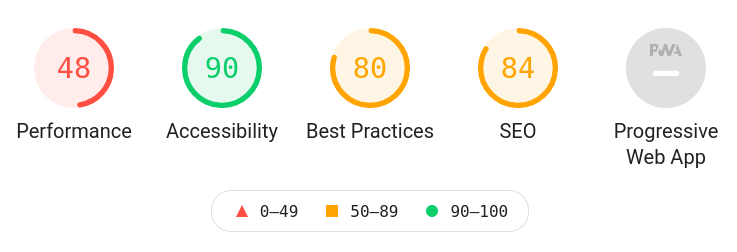
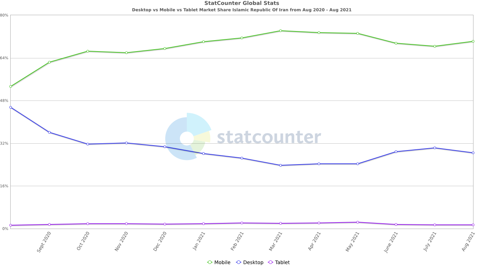

First, let's look at the current state of Hype websites
(Both Iran and International)
To measure performance of a website we use Google's analysis tool.
Here is the result of loading hype.ir mobile with Irancell data network:

Not very impressive!
Google uses these measurements to rank websites in its search results. A lower rank means you won't have much visibility on Google.
So if your plan is to improve your online presence, having a performant website is the essential first step.
In past 10 years web browsing using mobile devices saw a surge and even surpassed browsing from desktop (i.e. laptops) in recent years.
please slide down
Here's device usage data from Iran (source):

For brands which rely on Instagram to communicate with their audience, having a good mobile website is even more important.
This way you can direct followers to your website for information and be sure that they don't end up on a web page that doesn't work correctly on her device.
We reviewed the international website to get a sense of what hype is doing and to become more familiar with your brand.
The summary is that aside from a perfect design, good use of some simple web techniques made the website a valuable component to convey brand personality.
All over the website small transitions are implemented with an impressive precision to give the pages the sense of action that Hype is known for.
To boost the energy, there are small videos in some pages.
It's very important that these videos load fast. The use of latest web technologies (aka HTML5) helped designers achieve this.
…even worse that hype.ir!
The result is that for a short tail keyword like "Hype" hype.com is on second page of Google results.
Static websites are loading super fast and therefore friendly to situations were Internet connection is not stable, like what we're experiencing in Iran.
Here are two examples from our own experience:
please slide down
Wordpress has become the de facto tool for building blogs, business websites, and even ecommerce. But in our experience maintaining a Wordpress website gets unwieldy as the size and requirements of the website grows.
The solution we are offering allows you to scale with worrying how it affects the websites performance and load time.
We'll handle everything from a pixel-perfect implementation of the design up to the deployment of the website on your servers.
and please contact us for more questions.
Created by Sina. For your eyes only 🙏.